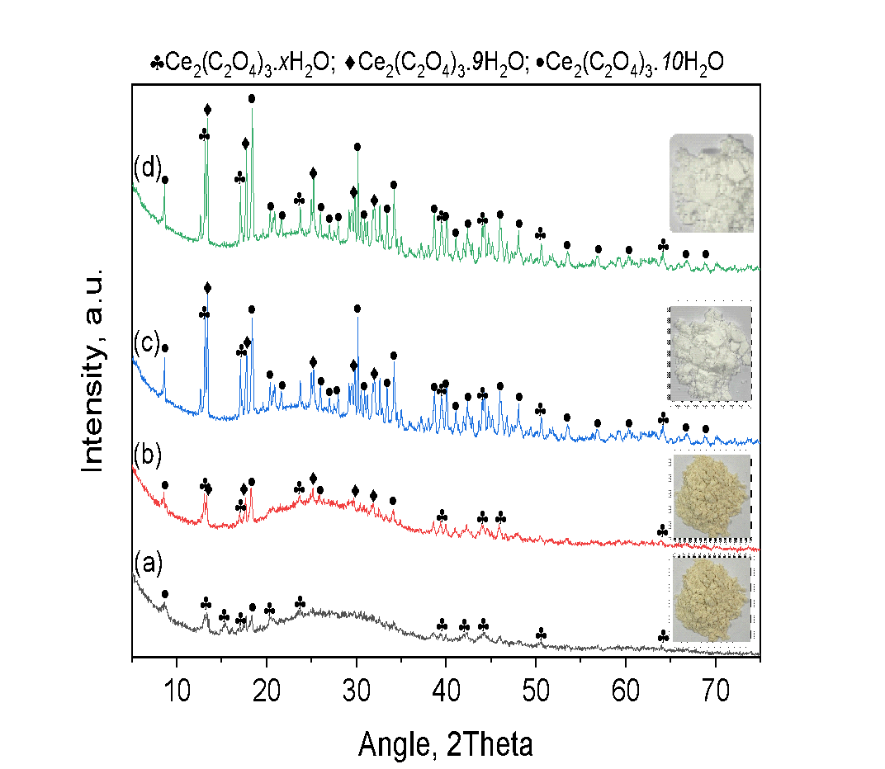
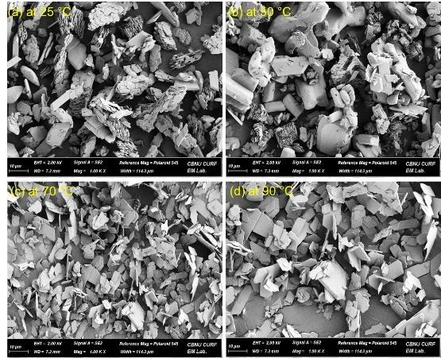
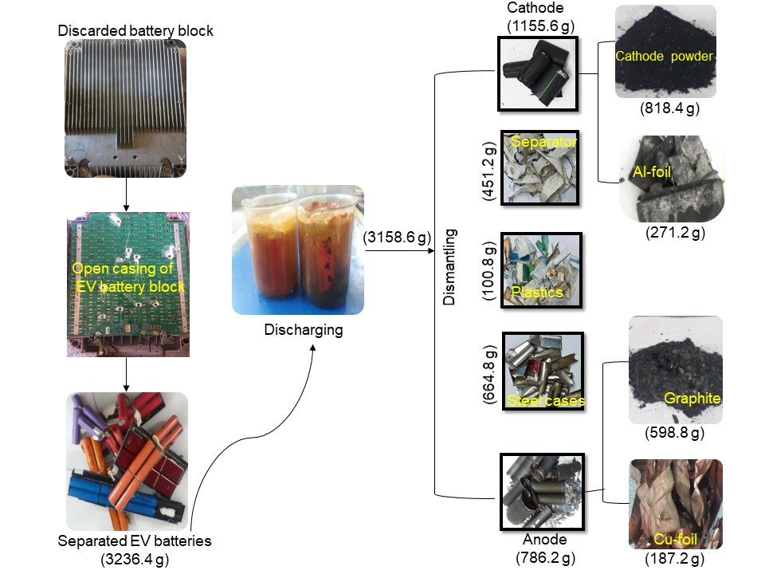
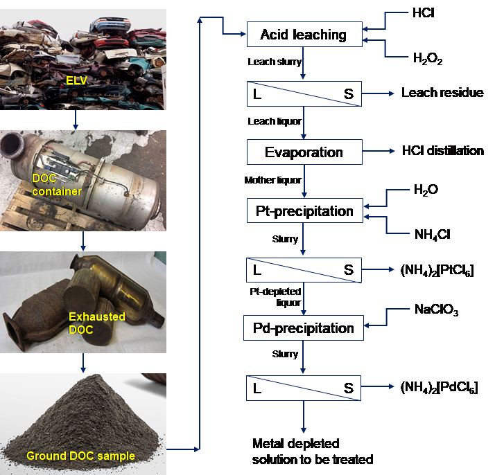
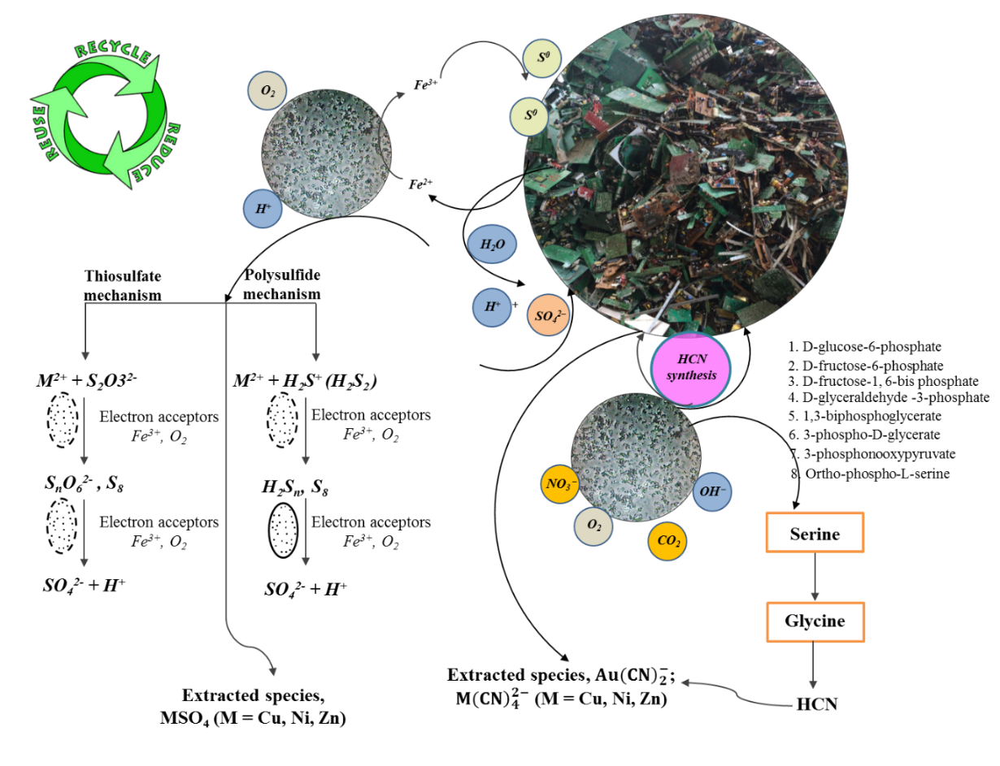
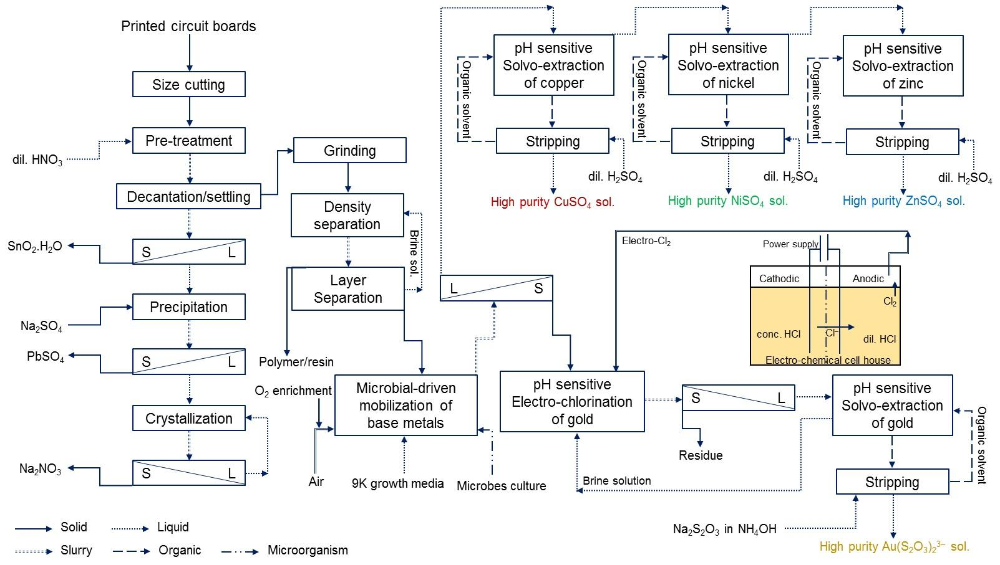
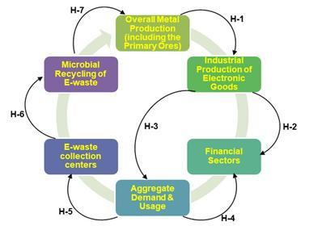
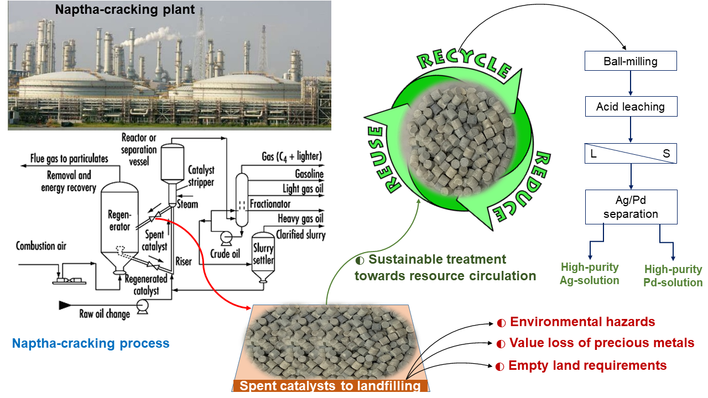
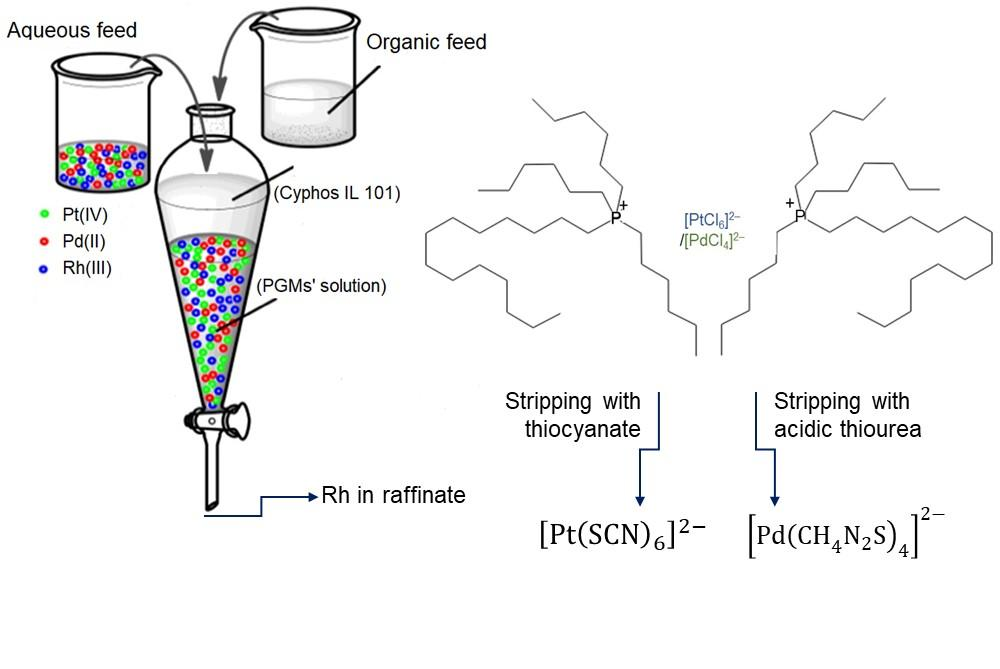

2. Studies on kinetics and mechanism of cerium precipitation as
reduced oxalate salt


3. Parameter optimization on the extraction of critical metals from
spent Li-ion batteries using organic acid

4. Resource recycling of precious metals (Pt and Pd) from spent
diesel-oxidation catalyst

5. Mechanism for microbes-to-metals interactions for mobilizing the
critical metals from waste PCBs

6. Recovery of the base and precious metal using the integrated
bio-solvo and electro-chemical techniques

7. Based on the integration of bio-solvo-chemical technique, the
restoration studies of critical metals

8. Sustainable treatment of bimetallic (Ag–Pd/α-Al2O3) catalyst
waste from naptha cracking process

9. Separation of platinum group metals from chloride medium using
green phosphonium-based ionic liquid

10. Green technology development for the processing of low-grade
monazite from vein- deposited mines
11. Kinetics and mechanism of reductive precipitation of
Ce(III)-oxalate
12. Bio-degradable organic acid leaching of critical metals to
recycle spent Li-ion batteries.
13. Precious metals’ recovery from exhausted diesel-oxidation
catalyst
14. Assessment of metal-to-microbe interactions for mobilizing
critical metals from waste PCBs
15. Process integration of Bio-solvo-chemical techniques with
Electro-solvo-chemical technique
16. Application of integrative technology in restoration of critical
metals from electronic waste
17. Sustainable treatment of bimetallic (Ag-Pd/α-Al 2 O 3 ) catalyst
waste from naptha cracking process
18. Application of green ionic-liquid solvent in separation of
Pt-group metals